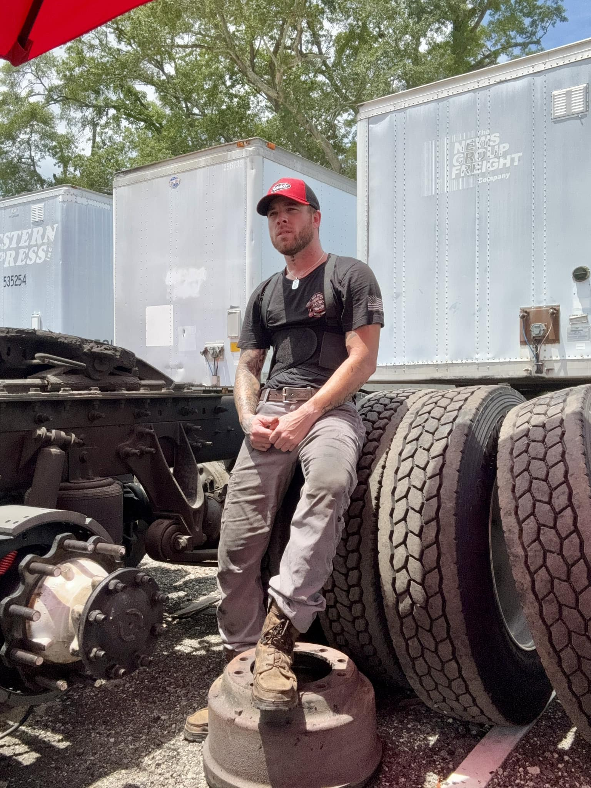
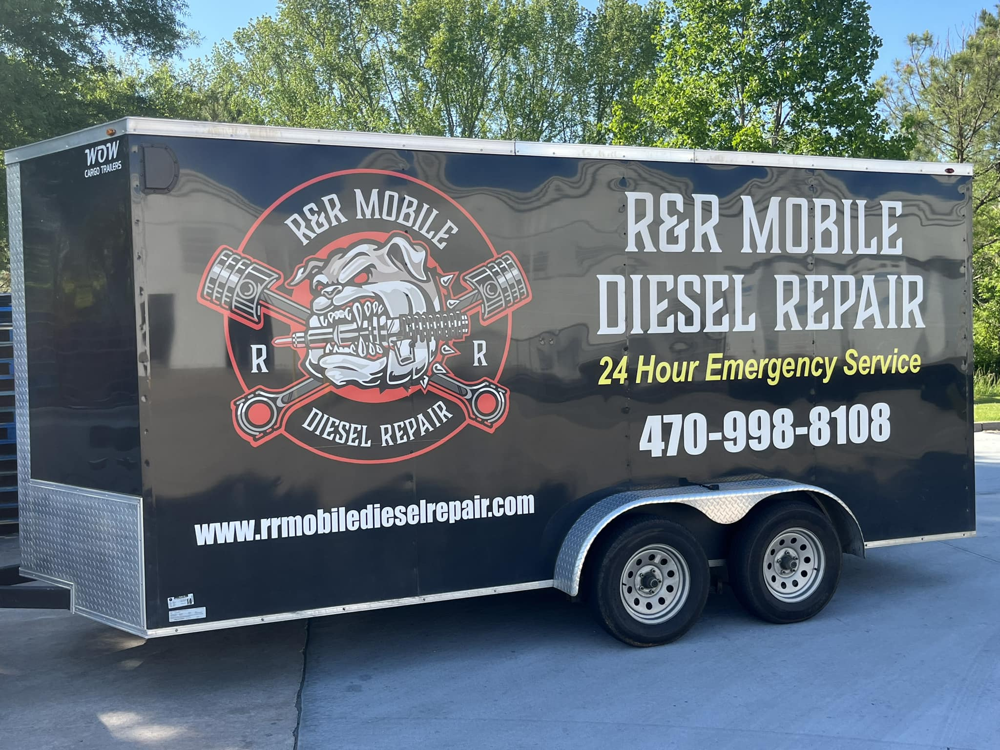
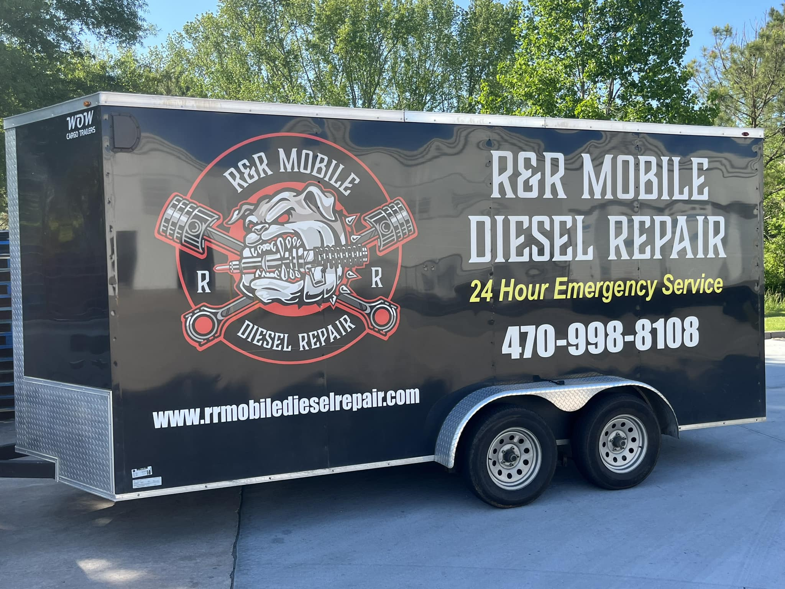
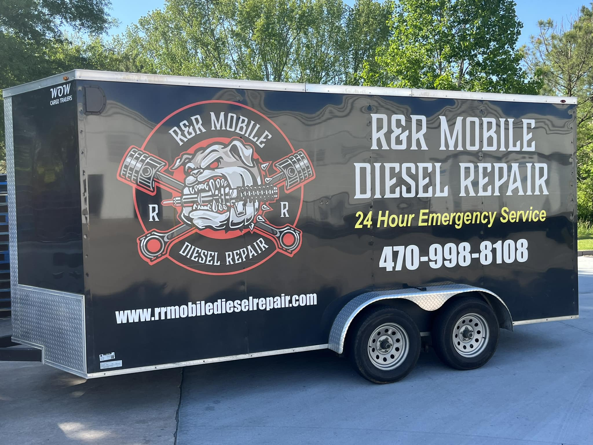
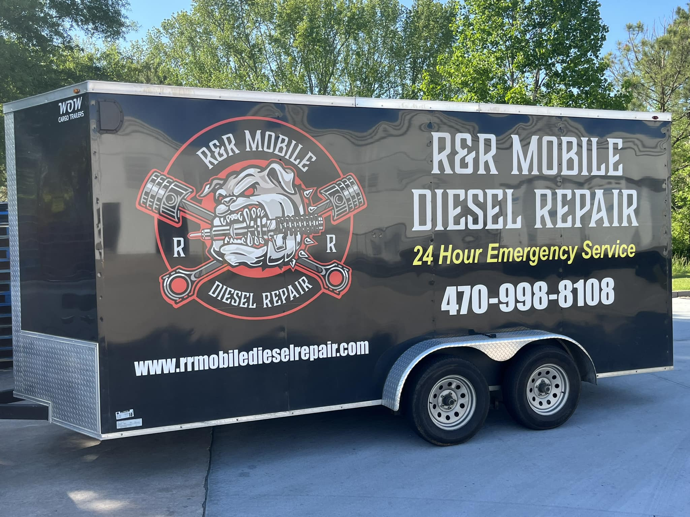

📸 Photo Gallery



 



24/7 Mobile Diesel Mechanic – Serving Covington, Newton County & Greater Atlanta
“Chance came through at 2 AM and had my truck rolling in under an hour.” – ★★★★★ – Michael T.
“Professional, knowledgeable, and fast. Best mobile diesel tech around!” – ★★★★★ – Latoya R.
“He diagnosed a major issue in minutes and got it fixed roadside.” – ★★★★★ – Carlos M., Covington
“Reliable and affordable. I won’t use anyone else.” – ★★★★★ – Darnell B.
“Responsive, honest, and got the job done right the first time.” – ★★★★★ – Angie K.
“Best service hands down. Chance knows his stuff!” – ★★★★★ – Thomas J.
Average Rating: 5.0/5 (Based on verified customer reviews)

Location: 111 Sewell Road, Mansfield, GA 30055
Phone: (470) 998-8108
Hours: Open 24 Hours
Facebook: Visit Page